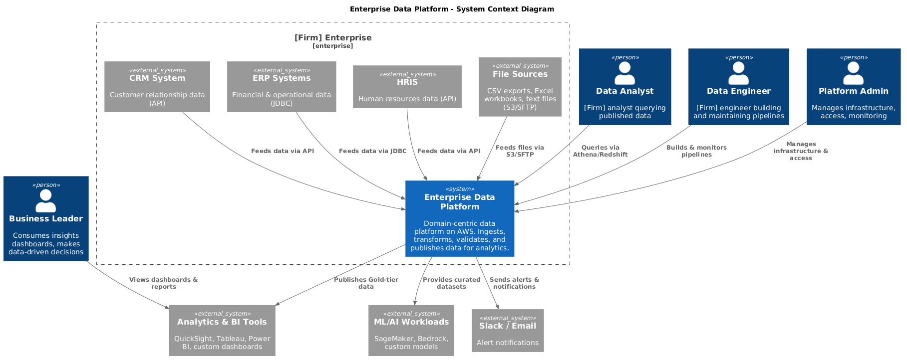
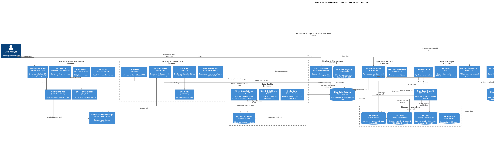

Request for Proposal — Response
Domain-centric lakehouse on AWS · AI-accelerated delivery · 16 weeks
Prepared for [Firm] · Prepared by EPAM Systems
Project code: EDP-2026-01 · April 2026
50+ pipelines, 6 domains · Glue, Step Functions, Athena, Lake Formation · 20 wk · 70% reduction in data prep time
On-prem DWH → AWS · Medallion · 100+ sources · 6 mo · 40% cost reduction, 3× query perf
EventBridge, Kinesis, Lambda · sub-second latency · 14 wk · Executive real-time dashboards
RFP §4 is cloud-agnostic (AWS · Azure · GCP). RFP §10.3a asks for Microsoft references.
Service breadth: Glue · Lake Formation · Athena · Redshift Serverless · DataZone · Bedrock · Macie. Native in-region AI via Bedrock. EPAM CE bench depth on AWS data stack.
Medallion model unchanged. Delta/Iceberg on ADLS Gen2. Purview replaces DataZone. Delta ROM within 1 week of request.
Three EPAM projects on Fabric / Synapse + Databricks / Purview. Demonstrated capability regardless of stack choice.
Stack decision is reversible in Phase 0 based on [Firm]'s existing footprint.
"Domain-centric" + "accelerated development" → Data Mesh approach + AI acceleration.
Illustrative targets backed by EPAM benchmarks across 12+ data-platform engagements · calibrated to [Firm] baselines in Phase 0 · signed in the Project Charter
North Star — [Firm]'s business leaders make more decisions, faster, backed by data they trust.
10 pipelines is a portfolio. We select on explicit business merit in Phase 0 (wk 1-2).
| Criterion | Weight |
|---|---|
| Business value | 40% |
| Data readiness | 20% |
| Complexity (inverse) | 20% |
| Stakeholder alignment | 20% |
Complexity mix (SC-03): ~3 Low · ~5 Medium · ~2 High
Full worksheet: docs/delivery/pipeline-prioritization.md
| Area | Our understanding |
|---|---|
| Infrastructure | Reusable domain templates (IaC), 3 envs, cross-domain linkages |
| CI/CD | DEV → TST → PRD with security gates |
| Data Quality | Completeness · accuracy · timeliness + alerts |
| Monitoring | Centralized hub across all domains + envs |
| Deliverables | 10 pipelines · templates · docs · training · migration plan |
| Timeline | ~16 weeks (proposed) |
Source system access is the #1 risk (R1) — Day-1 checklist + synthetic data fallback.
14 ADRs in MADR format — Context · Decision · Alternatives · Consequences · docs/architecture/adr/
| # | Decision | Choice |
|---|---|---|
| 001 | Cloud provider | AWS |
| 002 | Open table format | Apache Iceberg |
| 003 | CDC pattern | DMS (RDBMS) · S3 events (files) · Kinesis (stream) |
| 004 | Schema registry + contracts | JSON Schema in Git + CI-enforced SemVer |
| 005 | DR strategy | Multi-AZ + CRR · RPO 1h / RTO 4h |
| 006 | DQ engine | Great Expectations (GX) · Glue DQ fallback |
| 007 | Orchestration | AWS Step Functions |
| 008 | Lineage | OpenLineage + Marquez + Spark agent |
| 009 | Catalog / marketplace | AWS DataZone |
| 010 | Geospatial | GeoParquet + H3 + spatial ER |
| 011 | Access control boundary | Lake Formation authoritative · IAM for services · LF deny wins |
| 012 | MDM / entity resolution | AWS Entity Resolution + Zingg · shared Gold dims |
| 013 | Data observability | CW Anomaly Detection + Soda Core |
| 014 | Retention by classification | Public 30d · Internal 1y · Confidential 3y · Restricted 7y + legal hold |

Source: c4-context.puml

| Ingest | Glue · Lambda · Step Functions · DMS |
| Storage | S3 Medallion · Iceberg |
| Catalog | Glue Catalog · DataZone |
| Query | Athena · Redshift Serverless |
| DQ | Great Expectations (Lambda) |
| Obs | CloudWatch · X-Ray · OpenLineage |
| Security | Lake Formation · KMS · Macie |
| CI/CD + AI | GH Actions · CodeBuild · Bedrock |
All serverless or managed — no EC2 instances to maintain. Source: c4-container.puml
terraform apply -var domain_name=sales -var environment=dev provisions:
Consistent naming, security, monitoring from Day 1. Self-serve post-handoff.
Adding Domain 3, 4, 5 is trivial after we build the template. Post-handoff team onboards a new domain without us.
Validated in Phase 3 when Domain 2 is provisioned from the same template.
| Tier | Format · DQ gate |
|---|---|
| Bronze | Source-native + metadata sidecar · schema + Macie PII classification |
| Silver | Iceberg + GeoParquet · completeness ≥ 95% · spatial (CRS, topology) |
| Gold | Iceberg + GeoParquet · completeness ≥ 99% · timeliness SLO · business rules |
vs Delta / Hudi / plain Parquet — see ADR for alternatives analysis
Promotion rule — data only moves to next tier after passing DQ gate. Per-tier retention per ADR-014.
Spatial is the product, not a feature — ADR-010
| Concern | Decision |
|---|---|
| Storage format (Silver/Gold) | GeoParquet 1.1 with explicit CRS metadata |
| Default storage CRS | EPSG:4326 (WGS84) · local grids (BNG, UTM) preserved when required |
| Spatial indexing | H3 resolutions 7 · 9 · 12 pre-computed in Silver |
| Cross-dataset spatial identity | dim_spatial_entity · deterministic + probabilistic (H3-12 proximity + fuzzy name) · ADR-012 |
| Raster (imagery/DEM) | Out of scope for initial 10 · COG + AWS Open Data in migration plan |
| Consumer interfaces | Athena ST_* UDFs · Redshift Serverless GEOMETRY · tile server (future) |
| Spatial DQ checks | CRS conformance · topology validity · bounding-box · H3 correctness |
Consumers don't re-project, re-index, or re-resolve identity on every query. Same well / asset / structure reconciled once across CRM · ERP · survey.
Domain-centric governance — Data Mesh principles, federated + centralized
| Principle | Implementation |
|---|---|
| Domain ownership | Each domain owns data products end-to-end |
| Data as a product | Gold tables: documented, versioned, SLA-bound, subscribable via DataZone |
| Self-serve platform | Terraform templates + edp_common + CI/CD + AI agents |
| Federated governance | Central standards enforced via templates + CI gates + contract registry |
Recommended steady-state team: 1 Platform Engineer + 2 Data Engineers
Three RFP-mandated dimensions — GX primary, Glue DQ fallback (ADR-006)
| Dimension | Checks | Example |
|---|---|---|
| Completeness | Null rates · row counts · schema validation | customer_email is never null; row count ±5% vs. source |
| Accuracy | FK validity · regex · statistical distribution | phone matches E.164; revenue in expected range |
| Timeliness | SLA adherence · freshness | pipeline completes by 06:00 UTC |
On failure — configurable per pipeline: halt · quarantine · continue with warning. Results → S3 + DynamoDB for trend analysis. Visualized on React dashboard.
Data observability (ADR-013): CW Anomaly Detection on volume/distribution + Soda Core nightly on Gold — catches drifts GX rules miss.
JSON logs · correlation IDs · CloudWatch Log Insights · centralized cross-env hub
Pillar 130+ custom CloudWatch metrics · business + infra + cost + SLO
Pillar 2AWS X-Ray · Lambda → Step Functions → API Gateway · E2E pipeline traces
Pillar 3CW Alarms → SNS → Email · Slack · PagerDuty · auto-remediation
Pillar 4React Monitoring Dashboard — pipeline view · DQ scorecard · cross-domain hub · lineage DAG (Marquez). Domain health score = 0.4·DQ + 0.3·freshness + 0.2·success + 0.1·(1-cost_anom).
Every NFR is measurable · docs/architecture/nfr-slo-matrix.md
| Category | Headline target |
|---|---|
| Performance | Athena p95 ≤ 10s · Redshift BI p95 ≤ 5s · ingest ≥ 50 MB/s bulk |
| Freshness (Gold) | ≤ 60 min end-to-end (standard) · daily SLO ≤ 06:00 UTC |
| Availability | Gold read 99.9% · Monitoring UI/API 99.5% |
| RPO / RTO (Gold) | RPO 1h / RTO 4h via CRR + Iceberg snapshots (ADR-005) |
| Security | 0 critical vulns at deploy · 0 public buckets · PII classified ≤ 15 min post-ingest |
| Quality | Gold completeness ≥ 99% · anomaly-alert actioned ≥ 80% within 24h |
| Cost | ≤ $0.05 per GB processed · monthly spend ≤ $18K steady-state |
| Dev experience | PR cycle p95 ≤ 3 days · new domain provision ≤ 1 hour |
Error budgets computed monthly · tracked in monitoring hub · breach → SteerCo escalation.
Two layers — Claude Code for humans · automated agents for repeatable tasks
| Agent | Purpose | Trigger |
|---|---|---|
| pipeline-generator | Generate Glue jobs · Step Functions · DQ suites from spec | Manual |
| pr-reviewer | Multi-pass: security · quality · architecture · cost | PR event |
| test-generator | pytest fixtures · moto mocks · synthetic data | Manual |
| doc-generator | Auto-generate pipeline docs · data dictionaries | Weekly |
| terraform-reviewer | Checkov · cost estimation · best practices | PR with /infra/ |
| schema-validator | Validate Glue Catalog schema changes against contracts | Pre-merge |
| dq-tuner | Analyze DQ history · suggest threshold adjustments | Weekly |
Production-grade — 7 agents · max 3 retries · duplicate prevention · input validation · human escalation. ROI: ~$8K AI cost → ~$38-51K labor savings = 4-6×.
| Workflow | Trigger | Checks |
|---|---|---|
| Terraform CI | PR · /infra/ | fmt · validate · tflint · checkov · plan |
| Python CI | PR · /pipelines/ | ruff · mypy · pytest |
| React CI | PR · /monitoring-app/ | eslint · vitest · build |
| Contract CI | PR · /contracts/ | SemVer enforcement · consumer signoff · DQ alignment |
| AI PR review | Any PR | 5-pass automated review |
feature → DEV (auto) → TST (manual + QA) → PRD (approval gate)
JSON Schema diff → SemVer check → consumer signoff YAML required for MAJOR bumps. docs/architecture/data-contract-ci-gate.md
Breaking changes are blocked before merge · SemVer enforced · consumer sign-off required for MAJOR bumps · ADR-004
$ scripts/validate-contract.py --base origin/main --head HEAD
Scanning changed contracts...
contracts/sales/customer/v1.json:
✗ BREAKING: column 'full_name' removed
✗ BREAKING: 'customer_name' added (rename detected)
✗ SemVer mismatch:
current: 1.3.0 (MINOR bump)
required: ≥ 2.0.0 (BREAKING detected)
PR BLOCKED — resolve before merge:
1. Bump to 2.0.0
2. Update consumers.yaml with sign-off
3. Retain v1 for 30-day grace window
Exit: 1
$ scripts/validate-contract.py --base origin/main --head HEAD
Scanning changed contracts...
contracts/sales/customer/v2.json: NEW MAJOR 2.0.0
✓ SemVer bump matches severity (BREAKING → MAJOR)
✓ v1 retained for 30-day grace (expires 2026-09-01)
✓ consumers.yaml updated:
- analytics-bi: ack 2026-07-25 (#PR-453)
- churn-model: ack 2026-07-26 (#PR-454)
✓ DQ suite dq_suites/sales/customer_v2.json exists
✓ PII classification complete (5 columns)
✓ Business keys declared (customer_id)
PR APPROVED — all gates green
Exit: 0
Full walkthrough + JSON Schema sample + consumer-signoff YAML: data-contract-ci-gate.md
| Area | Implementation |
|---|---|
| Network | VPC · private subnets · VPC endpoints (no public internet for data services) |
| Encryption | SSE-KMS at rest · TLS 1.2+ in transit · KMS CMK per environment |
| Access model | Lake Formation authoritative for data (table/column) · IAM for service/API · LF deny wins (ADR-011) |
| RBAC roles (per domain) | DomainAdmin · DataEngineer · DataAnalyst · PipelineExecution · MonitoringReadOnly |
| Data classification | Macie at Bronze ingest · 4 tiers (Public · Internal · Confidential · Restricted) · tags drive access + retention |
| Audit | CloudTrail (all regions) · S3 access logging · Object Lock (WORM) audit bucket |
| Vulnerability scanning | Dependabot · pip-audit · npm audit · Trivy — zero critical at deploy |
| GDPR | Right-to-erasure subject-level delete · 30-day RTO · legal hold hook |
A Monday 90 days post-handoff — 4 personas, one platform, one connected story
90 minutes · every capability mapped to an ADR or deliverable · no heroics.
One pipeline · end-to-end · real [Firm] data · by Week 6. Everything after is repetition at scale.
Domain selection · source inventory · ADRs · access checklist
Infrastructure · CI/CD · edp_common library
Real source → Bronze → DQ → Silver → DQ → Gold → dashboard. Executive sponsor sees working software at the 40% mark.
Pipelines 2-10 · pattern replication · cross-domain hub
Security hardening · training · migration plan · formal sign-off
Risk compression — every major unknown resolved by Wk 6, not Wk 14.
Agile (Scrum) with phase-gated milestones · 2-week sprints · 8 sprints across 16 weeks
| Ceremony | Cadence | Duration |
|---|---|---|
| Sprint planning | Bi-weekly Mon | 1h |
| Daily standup | Daily | 15 min |
| Sprint demo | Bi-weekly Fri | 1h |
| Retrospective | Bi-weekly Fri | 30 min |
| Backlog refinement | Weekly Wed | 30 min |
| Artifact | Cadence |
|---|---|
| Exec async brief | Weekly · Fri · ≤ 250 words |
| Decision SteerCo | Bi-weekly · 30 min |
| Phase-gate go/no-go | End of each phase · formal |
| Risk review | Bi-weekly · bundled with SteerCo |
| Quality metrics | Weekly · in brief |
Full plan: docs/governance/communications-plan.md
| Phase | Weeks | Focus | Exit criteria (highlights) |
|---|---|---|---|
| 0 · Discovery | 1-2 | Align scope · select domains | Domains signed · 10 pipelines documented · ADRs · access |
| 1 · Foundation | 3-6 | Infra + CI/CD | Terraform provisions domain · CI/CD green · edp_common live |
| 2 · Domain 1 | 5-10 | Reference pipeline + 5 pipelines + DQ | 5 pipelines in DEV · DQ suites pass · monitoring API live |
| 3 · Domain 2 + Monitoring | 9-14 | Pipelines 6-10 · cross-domain · hub | All 10 in TST · cross-domain queries · Domain 2 provisioned in < 1h |
| 4 · Handoff | 13-16 | Security · docs · training | All 10 in PRD · 0 critical vulns · 3 training sessions · migration plan |
edp_commonZero slack on the chain. Reserve draws require Sponsor written approval (48h SLA). Beyond 2 wk = formal re-baseline via CR process.
| Role | Seniority | Focus |
|---|---|---|
| Delivery Manager | Senior | Governance · risk · client comms · scrum master |
| Solution Architect | Lead | Technical design · ADRs · data modeling · spatial strategy |
| Platform / DevOps Engineer | Senior | Terraform · GitHub Actions · AWS infra · security hardening |
| Data Engineer 1 | Senior | Python · edp_common · reference pipeline · patterns |
| Data Engineer 2 | Mid | Pipeline development · DQ suite authoring |
| Full-Stack Developer | Senior | React dashboard · FastAPI · Cognito auth |
| QA Engineer | Senior | Test automation · E2E · UAT coordination |
| Technical Writer | Mid | Documentation · training materials · runbooks |
Peak team — 7 people (Wk 5-12) · AI augmentation — each role paired with Claude Code (30-50% productivity gain).
Per RFP §10.1c — required [Firm]-side roles
| Role | Count | Hrs/week | Peak |
|---|---|---|---|
| Executive Sponsor | 1 | 1-2 | Phase 0 · Phase 4 · phase gates |
| Data Platform Lead | 1 | 4-6 | All phases — primary contact |
| Domain Data Owner | 2 | 4 each | Phase 1 · Phase 2 |
| IT / Security Lead | 1 | 2-4 | Phase 0 · Phase 3-4 |
| QA / UAT Team | 2-3 | 8 in P3-4 | Wk 13-14 |
| Training Attendees | 6-10 | Half-day × 3 | Wk 16 |
Total client commitment: ~20-30 hrs/week across all roles. Full detail: docs/risk/client-stakeholders.md
100% allocation when on · clear ramp-up and ramp-down · no fractional FTEs
| Role | Start | End | Weeks | Person-Days |
|---|---|---|---|---|
| Delivery Manager | Wk 1 | Wk 16 | 16 | 80 |
| Solution Architect | Wk 1 | Wk 14 (+50% Wk 15-16) | 14 + tail | 70 + 10 |
| Platform / DevOps Engineer | Wk 1 | Wk 16 | 16 | 80 |
| Data Engineer 1 (Senior) | Wk 1 | Wk 16 | 16 | 80 |
| Data Engineer 2 (Mid) | Wk 3 | Wk 12 | 10 | 50 |
| Full-Stack Developer | Wk 5 | Wk 16 | 12 | 60 |
| QA Engineer | Wk 5 | Wk 16 | 12 | 60 |
| Technical Writer | Wk 13 | Wk 16 | 4 | 20 |
| Total priced PD (WBS = 295 PD · uplift baked into day rate) | 500 | |||
Peak 7 people (Wk 5-12) · Rate card: EPAM & CAPG Central Europe · full reconciliation in docs/delivery/wbs.md
| # | Risk | I | P | Exp | Treatment |
|---|---|---|---|---|---|
| R1 | Source system access delays | H | H | High | Day-1 checklist · synthetic data fallback · Sponsor escalation |
| R2 | Domain selection exceeds 2 weeks | H | M | High | Pre-populated priority matrix · 5-day timebox · escalation |
| R3 | AWS account SCP restrictions | H | M | High | Day-1 SCP review · smoke test · alternative service list |
| R8 | Client stakeholder availability | H | M | High | Named RACI · weekly decision mtg · 48h Slack SLA · escalation |
| R10 | AI-generated code quality | H | M | High | Multi-pass PR review · CODEOWNERS · reference pipeline human-built |
| R4 | Data volumes exceed estimates | M | M | Med | CDC patterns (DMS) · DPU caps · Glue Flex · AWS Budgets alerts |
| R6 | Key team member departure | H | L | Med | Pair programming · ADRs · IaC-only · bi-weekly KT review |
| R7 | Scope creep | M | H | Med | SOW boundaries · 4-tier CR process · migration plan for overflow |
| R9 | Bedrock model access delays | M | M | Med | Submit Phase 0 · Anthropic API fallback · config-switchable |
| R5 | GX / Glue Python incompatibility | M | L | Low | Run GX in Lambda 3.12 · Glue DQ fallback · ADR-006 |
5 High · 4 Medium · 1 Low — all mitigated · full register in docs/risk/risk-register.md
Time & Materials · Central Europe rates · rate card locked for 16 weeks
| Role | PD | Cost |
|---|---|---|
| Delivery Manager | 80 | $64,000 |
| Solution Architect | 70 + 10 | $70,400 |
| Platform Eng | 80 | $48,000 |
| Data Eng 1 | 80 | $48,000 |
| Data Eng 2 | 50 | $26,800 |
| Full-Stack | 60 | $36,000 |
| QA | 60 | $32,160 |
| Tech Writer | 20 | $9,600 |
| Total labor | ~510 | ~$335K |
| Line | Low | High |
|---|---|---|
| AWS infra (4 mo) | $32,000 | $60,000 |
| AI (Bedrock + Claude Code) | $7,440 | $8,440 |
| Tooling & licenses | $0 | $12,000 |
| Travel (optional) | $5,000 | $10,000 |
| Contingency (10% labor) | $32,616 | $32,616 |
Total ROM: $403K – $449K
AI ROI: ~$8K spend → ~$38-51K labor savings = 4-6×. Client-facing ROI: 2.5-5× post-handoff pipeline velocity.
| Phase | Depends on (client) |
|---|---|
| Phase 1 | AWS account access · IT/Security |
| Phase 2 | Domain selection complete · source access · domain owner engagement |
| Phase 3 | Domain 2 source access · cross-domain business rules |
| Phase 4 | UAT team available · training attendees scheduled |
Full log: docs/risk/assumptions.md · 25+ assumptions with validation dates.
We don't create dependency — we build the platform, tools, and knowledge so [Firm] continues independently.
edp_common Python library| Step | Who | Timeline |
|---|---|---|
| Inventory + T-shirt size | Delivered in DOC-008 | End of engagement |
| Prioritize into waves | [Firm] Platform Lead | Month 1 post-handoff |
| Execute via templates + agents | [Firm] team (+ optional retainer) | 2-4 wk per wave |
| Validate + promote | [Firm] QA | Per wave |
Post-handoff velocity: ~5 pipelines / 2-week sprint (2-eng team with templates + agents) vs. 1-2 greenfield.
Training is necessary · not sufficient · adoption is a 90-day product rollout
#edp-community from kickoff · EPAM read-only for 90 days post| KPI | 30d | 60d | 90d |
|---|---|---|---|
| Unique Gold queriers | ≥ 10 | ≥ 25 | ≥ 50 |
| New pipelines by client | 0 | ≥ 2 | ≥ 5 |
| DQ alerts SLA-triaged | ≥ 70% | ≥ 80% | ≥ 90% |
| Champion docs/PRs | ≥ 1 | ≥ 3 | ≥ 5 |
Red flags: < 5 queriers by day 60 · 0 new pipelines by day 90 · DQ backlog > 10 · champion attrition → intervention via Sponsor.
Anonymized · full case studies under NDA · additional Microsoft-stack refs in Appendix B
[Industry sector]
[Industry sector]
[Industry sector]
Five reasons this proposal lands differently than other systems integrators
7 production-grade agents + Claude Code per role. Not experimental — orchestrated with guardrails (max 3 retries, duplicate prevention, human escalation). 4–6× ROI on engagement, 2.5–5× on client-side pipeline velocity.
DifferentiatorThe template IS the product. New domains provision in < 1 hour post-handoff. We don't create dependency — we build the platform, tools, and knowledge so [Firm] continues independently.
PlatformGeoParquet · H3 · spatial entity resolution. Only vendor in this bid explicitly architecting for [Firm]'s core data type. Spatial identity resolved once, not per-query.
Client-fit14 ADRs in MADR format — every technical choice documented with Context · Decision · Alternatives · Consequences. No black boxes, no tribal knowledge.
RigorCommercial frame: T&M contract · rate card locked · weekly burn visibility · schedule reserve held by DM · migration plan handed over · adoption tracked to day 90.
Questions & Discussion
Artsiom Kharytonchyk · Delivery Manager
Supporting documents & full detail available in this repository
WBS · Risk Register · ROM · RACI · Assumptions · Stakeholder Register · 14 ADRs · Governance Pack · NFR/SLO Matrix · Contract CI Gate · Domain Health Score
Per RFP §10.3a · anonymized · full case studies available on request under NDA
[Industry sector]
[Industry sector]
[Industry sector]
Microsoft Fabric / Azure variant of this proposal available with delta ROM within 1 week of request.